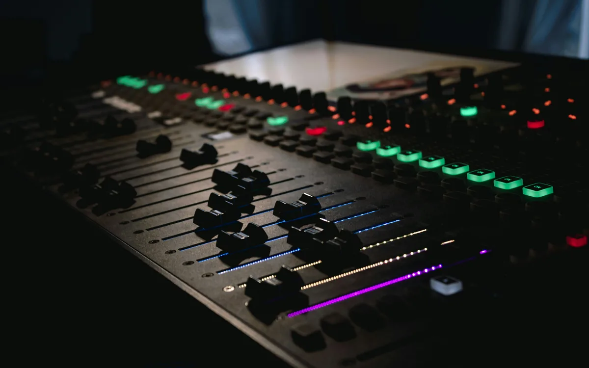
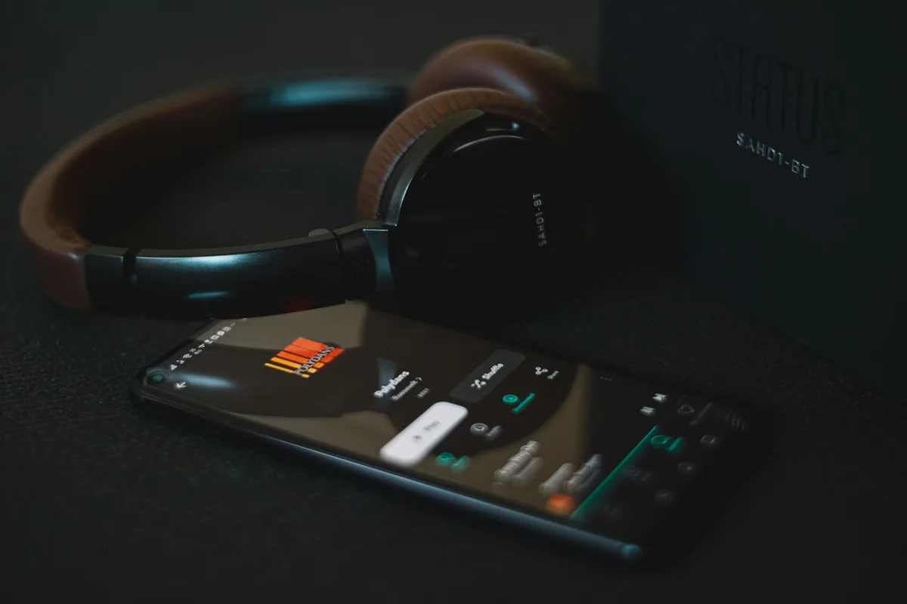
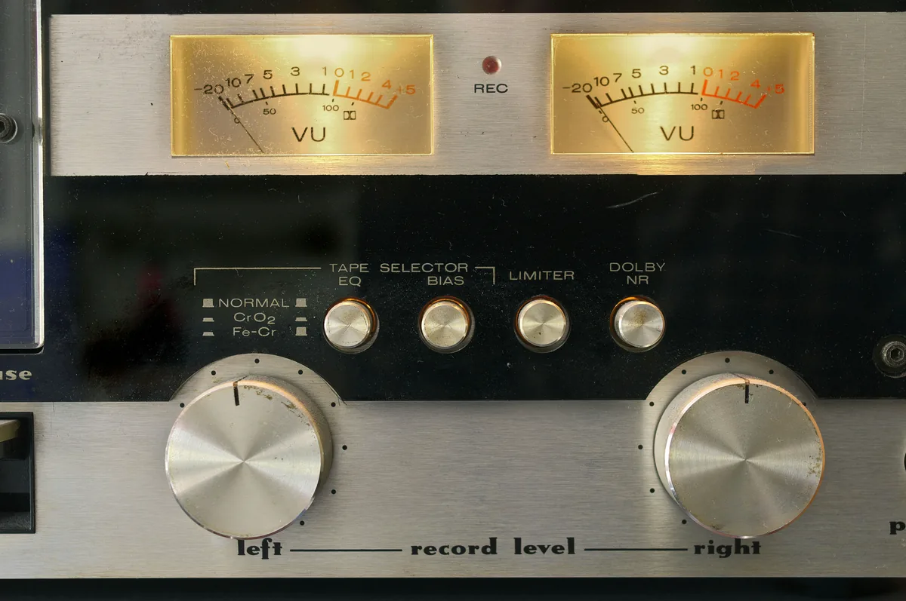

Skończyłeś miks, wszystko brzmi świetnie w słuchawkach, wrzucasz na Spotify - i nagle utwór jest cichszy od wszystkich innych, traci energię i "kopa". Znasz to? To jeden z najczęstszych problemów początkujących producentów, a rozwiązanie tkwi w zrozumieniu kilku pojęć, które rządzą głośnością na platformach streamingowych.
Czym jest LUFS, True Peak i Headroom?
Zanim zaczniesz przygotowywać master pod streaming, musisz znać trzy podstawowe pojęcia. Bez nich ciężko sensownie kontrolować to, co robi Twój utwór po wyjściu z DAW-a.
LUFS - głośność, którą słyszy ucho
LUFS (Loudness Units relative to Full Scale) to nowoczesna miara głośności. W odróżnieniu od starych mierników Peak czy RMS, LUFS uwzględnia to, jak nasze ucho faktycznie odbiera dźwięk - czyli uwzględnia psychoakustykę. Wolniejsze tony (np. bas) muszą być głośniejsze, żebyśmy postrzegali je jako równie głośne co środek pasma - LUFS to uwzględnia. Dzięki temu dwa różne utwory ze wskazaniem -14 LUFS brzą subiektywnie podobnie głośno, niezależnie od gatunku.
Rozróżniamy dwa główne pomiary:
- Integrated LUFS - średnia głośność całego utworu. Tego używają platformy do normalizacji.
- Short-term LUFS / Momentary LUFS - chwilowa głośność w czasie rzeczywistym. Przydatne przy pracy na żywo nad miksem.
True Peak - ukryte przesterowania
True Peak to rzeczywisty szczyt sygnału, który uwzględnia tzw. inter-sample peaks, czyli szczyty pojawiające się między próbkami przy przetwarzaniu cyfrowym. Dźwięk cyfrowy jest próbkowany - mierzone są wartości co np. 1/44100 sekundy. Ale gdy plik audio zostaje zakodowany do MP3 lub OGG (co robi Spotify czy YouTube), przetwarzanie może wytworzyć szczyty wyższe niż 0 dB, nawet jeśli Twój plik WAV na to nie wskazywał.
Dlatego limitować należy właśnie True Peak, nie zwykły Peak. Większość platform zaleca limit na poziomie -1 dBTP (decybele True Peak). Wychodzenie powyżej tej wartości skutkuje przesterowaniami, które brzmią jak chrupanie lub trzeszczenie - szczególnie słyszalne w słuchawkach.
Headroom - zapas dynamiki
Headroom to przestrzeń między najgłośniejszym momentem Twojego sygnału a poziomem 0 dBFS (pełna skala cyfrowa). Jeśli Twój master uderza w 0 dBFS lub blisko, nie ma miejsca na żadne przetworzenie bez clippingu. Standardowo zostawia się minimum -1 dB headroom, choć przy masteringu pod streaming często -1 dBTP (True Peak) jako limit daje więcej bezpieczeństwa.
Loudness Normalization - dlaczego Spotify ścisza Twoje utwory?
Spotify, Apple Music, YouTube, Tidal - wszystkie wielkie platformy używają automatycznej normalizacji głośności. Mechanizm działa prosto: algorytm mierzy Integrated LUFS każdego przesłanego utworu i przy odtwarzaniu podgłaśnia albo ścisza go do swojego docelowego poziomu. Słuchacz nie musi kręcić gałką, bo kolejne piosenki nie będą skakać głośnością.

Co to oznacza w praktyce? Jeśli zmasterujesz utwór "na cegłę" - czyli wyciśniesz z niego -6 LUFS lub głośniej - platforma i tak go ściszy do swojego targetu (np. -14 LUFS na Spotify). A przy ściszaniu tracisz dynamikę. Utwór, który był agresywnie skompresowany i limitowany, po ściszeniu staje się płaski, bez oddechu, bez punchu. Paradoksalnie - głośniejszy master po normalizacji brzmi gorzej niż spokojniejszy, dynamiczny master.
Z kolei utwór cichszy niż target - np. akustyczna ballada na -18 LUFS - zostanie przez platformę podgłośniony. Jeśli masz tam zbyt wysoki True Peak, po podgłośnieniu pojawią się przesterowania, których nie było w oryginalnym pliku.
Mit -14 LUFS - czy naprawdę musisz w to celować?
W sieci krąży przekonanie, że każdy master musi mieć dokładnie -14 LUFS, bo "taki jest target Spotify". To nieprawda, a próba na siłę trafiania w tę wartość przynosi więcej szkody niż pożytku.
Oto co faktycznie się dzieje:
- Spotify ścisza wszystko, co jest głośniejsze niż -14 LUFS (przy domyślnych ustawieniach normalizacji).
- Nic nie robi z plikami cichszymi - zostawiasz dynamikę i platformie wystarczy to, co dostarczyłeś.
- Podgłaśnia tylko, jeśli utwór jest znacznie cichszy niż target (i wtedy ryzykujesz True Peak).
Praktyczny wniosek: zrób dobrze brzmiący, dynamiczny master i nie panikuj, że masz -9 LUFS zamiast -14 LUFS. Muzyka elektroniczna, klubowa, rockowa naturalnie jest głośniejsza - i to jest w porządku. Platforma delikatnie ją ściszy, ale zachowa dynamikę i punch, bo nie byłeś zmuszony jej dobijać limitererem do granic możliwości.
Celowanie na siłę w -14 LUFS ma sens głównie dla muzyki, która naturalnie jest dynamiczna i cichsza - klasyki, jazzu, folku, ballad. Dla reszty lepiej skupić się na jakości masteringu, a nie na konkretnej cyfrze.
Wymagania platform - Spotify, Apple Music, YouTube
Oto zestawienie docelowych poziomów głośności dla najważniejszych platform streamingowych. Pamiętaj, że są to wartości, do których platformy normalizują - nie musisz w nie idealnie trafiać, ale warto je znać.

Spotify
- Target normalizacji: ok. -14 LUFS (Integrated)
- Limit True Peak: -1 dBTP (zalecane -2 dBTP przy głośnych masterach)
- Format przesyłania: WAV lub FLAC, 16-bit lub 24-bit
Apple Music
- Target normalizacji: ok. -16 LUFS (Integrated) - Apple jest bardziej restrykcyjne
- Limit True Peak: -1 dBTP
- Uwaga: Apple oferuje też Dolby Atmos - tam obowiązują osobne wymagania
YouTube
- Target normalizacji: ok. -14 LUFS (Integrated)
- Limit True Peak: -1 dBTP
- Specyfika: YouTube używa normalizacji Content ID - może nieco różnić się w zależności od formatu wideo
Ogólna zasada bezpieczna dla wszystkich platform: celuj w zakres od -9 do -16 LUFS (zależnie od gatunku) i pilnuj True Peak poniżej -1 dBTP. Przy takich wartościach żadna platforma nie zrobi Twojemu masterowi nic, czego byś się obawiał.
Jak mierzyć LUFS w swoim DAW?
Większość profesjonalnych DAW-ów (Ableton, FL Studio, Logic, Reaper, Pro Tools) ma wbudowane mierniki głośności lub obsługuje wtyczki VST/AU do pomiaru. Umieść miernik na torze master (Master Bus / Master Channel) jako ostatnią wtyczkę w łańcuchu - lub przynajmniej za limiterem.
Darmowe wtyczki do pomiaru LUFS
Youlean Loudness Meter 2 - zdecydowanie najpopularniejszy wybór dla początkujących. Darmowa wersja mierzy Integrated LUFS, Short-term, Momentary i True Peak. Pokazuje historię głośności w czasie, co pomaga zrozumieć dynamikę utworu. Dostępna jako VST/AU/AAX. Wystarczy na start i jest intuicyjna w obsłudze.
LUFS Meter od Klanghelm - prosta, lekka wtyczka, darmowa w wersji podstawowej. Dobra jeśli potrzebujesz tylko szybkiego pomiaru bez rozbudowanego interfejsu.
Loudness Penalty Analyzer - narzędzie online (nie wtyczka), na które wgrywasz plik audio i dostajesz informację, o ile Spotify, Apple Music i YouTube go ściszą lub podgłośnią. Bardzo przydatne do finalnej weryfikacji mastera przed oddaniem do dystrybucji.
Jak korzystać: uruchom utwór od początku do końca z miernikiem na masterze i sprawdź wartość Integrated LUFS po pełnym odtworzeniu. Tylko taki pomiar jest miarodajny - nie zatrzymuj w połowie.
Podsumowanie
Mastering pod streaming to nie wyścig na głośność - to kontrola nad dynamiką i bezpieczeństwo sygnału. Trzy zasady, które warto zapamiętać:

- Zadbaj o dynamikę. Nie dobijaj mastera limitererem tylko po to, żeby trafić w -14 LUFS. Platformy i tak go ściszą, a Ty tracisz punch i głębię.
- Kontroluj True Peak. Zawsze ustawiaj limiter na -1 dBTP (a nie na 0 dB Peak). Inter-sample peaks potrafią zaskoczyć po kompresji do MP3/OGG.
- Używaj mierników LUFS. Zainstaluj Youlean Loudness Meter lub podobne narzędzie na masterze i mierz Integrated LUFS po pełnym odtworzeniu - nie orientuj się na oko ani na subiektywne wrażenie głośności.
Dobry master brzmi dobrze na każdej platformie. Znasz już narzędzia - teraz wystarczy je zastosować.
Najczęstsze pytania (FAQ)
Dlaczego mój miks po wrzuceniu na SoundCloud brzmi gorzej i "charczy"?
Najczęstsza przyczyna to przekroczony True Peak. SoundCloud koduje audio do MP3 lub OGG przy transkodowaniu, a ten proces może generować inter-sample peaks - szczyty między próbkami, które w pliku WAV były niewidoczne. Jeśli Twój limiter był ustawiony na 0 dB Peak zamiast -1 dBTP, po transkodowaniu pojawia się clipping. Rozwiązanie: zawsze ustawiaj ceiling w limiterze na -1 dBTP lub niżej i użyj miernika z funkcją True Peak (np. Youlean Loudness Meter) do weryfikacji przed uploadem.
Czy mastering pod streaming różni się od masteringu na płytę CD?
Tak, i to dość istotnie. CD nie normalizuje głośności - każdy utwór brzmi dokładnie tak głośno, jak go zmasterowałeś. Dlatego w erze CD producenci ścigali się na głośność (tzw. Loudness War). Na streamingu normalizacja wyrównuje pole - głośniejszy master nie daje Ci już przewagi, bo platforma go ściszy. Dodatkowo CD ma limit 0 dBFS, natomiast na streaming bezpieczniej zostawić True Peak na -1 dBTP z uwagi na transkodowanie. W praktyce: mastering na CD może być nieco głośniejszy i bardziej agresywnie limitowany, mastering streamingowy powinien zachować więcej dynamiki.
Zostawiłem limiter na 0 dB zamiast -1 dBTP. Czy muszę to poprawiać?
Zależy od sytuacji. Jeśli mierzysz True Peak w dedykowanym mierniku (np. Youlean) i wskazuje wartość poniżej -1 dBTP - jesteś bezpieczny, mimo że ceiling był ustawiony na 0 dB. Limiter ustawiony na 0 dB Peak nie gwarantuje, że True Peak też jest 0 dBTP - często jest wyższy. Jeśli Twój True Peak wskazuje 0 dBTP lub powyżej, warto cofnąć się do masteringu i ustawić limiter na -1 dBTP jako ceiling True Peak. Różnica w odczuwalnej głośności będzie minimalna, ale ochronisz się przed chrupaniem po transkodowaniu na platformach.
Jakie darmowe wtyczki do mierzenia LUFS polecacie na start?
Najlepszy punkt startowy to Youlean Loudness Meter 2 - darmowa wersja mierzy Integrated LUFS, Short-term, Momentary LUFS i True Peak, pokazuje historię głośności w czasie i działa we wszystkich popularnych DAW-ach (VST/AU/AAX). Jako uzupełnienie warto skorzystać z narzędzia online Loudness Penalty Analyzer - wgrywasz gotowy plik audio i dostajesz informację o ile każda z platform (Spotify, Apple Music, YouTube, Tidal) go ściszy lub podgłośni. Te dwa narzędzia razem w zupełności wystarczą do profesjonalnej weryfikacji masterów.